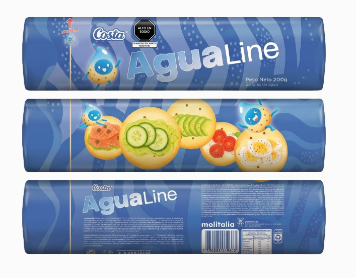

Packaging
Rediseño Estratégico - Agua Line
Análisis profundo del público objetivo y rediseño de identidad visual para una línea de empaques optimizados para el mercado retail. El proyecto se centró en mejorar el impacto visual en anaquel mediante el uso de principios de retórica visual, logrando destacar la pureza y frescura del producto frente a la competencia.